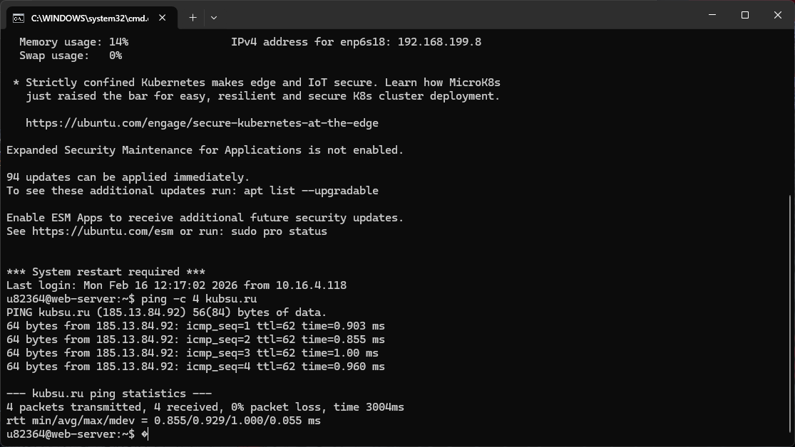
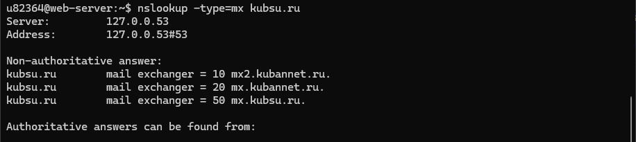
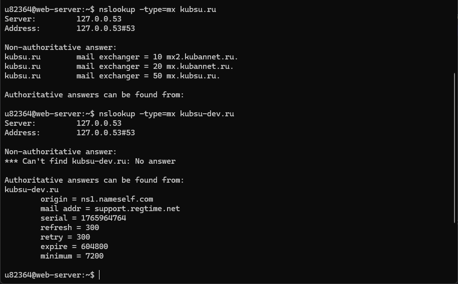
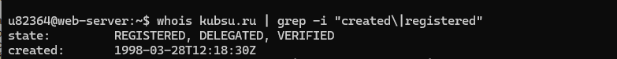
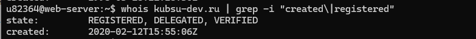
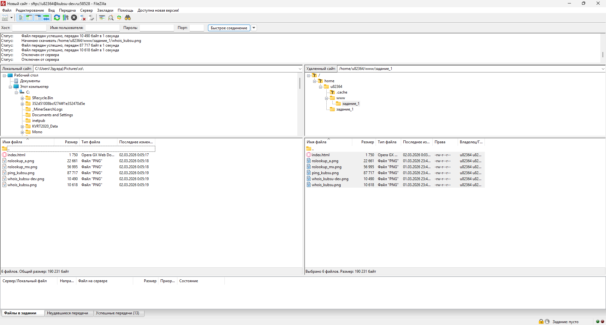

Курс: Сетевые технологии |
SSH (Secure Shell) — это протокол для безопасного удалённого доступа к серверам.
Для подключения использовался клиент PuTTY или команда ssh в терминале.
Команда подключения:
ssh u82364@kubsu-dev.ru -p 58528
Параметр -p 58528 указывает нестандартный порт для подключения (вместо стандартного 22).
Команда ping отправляет ICMP-пакеты на указанный хост для проверки его доступности
и измерения времени отклика (задержки).
Команда: ping -c 4 kubsu.ru
Параметр -c 4 означает отправку 4 пакетов.
Результат: IP-адрес веб-сервера kubsu.ru — 62.113.192.14

Команда nslookup (Name Server Lookup) используется для получения информации о DNS-записях домена.
A-записи — связывают доменное имя с IP-адресом.
MX-записи — указывают почтовые серверы для домена.
Команды:
nslookup kubsu.ru — A-запись
nslookup -type=mx kubsu.ru — MX-записи


Команда whois показывает информацию о регистрации домена: дату создания,
владельца, контактные данные и срок действия.
Команды:
whois kubsu.ru
whois kubsu-dev.ru
Результат:
Домен kubsu.ru зарегистрирован: [дата из скриншота]
Домен kubsu-dev.ru зарегистрирован: [дата из скриншота]


Была создана веб-страница index.html со всеми скриншотами и описанием.
Файл загружен на сервер в папку ~/public_html/задание_1/.
Страница доступна по адресу: http://u82364.kubsu-dev.ru/задание_1/
FileZilla — это FTP/SFTP-клиент для передачи файлов между локальным компьютером и сервером.
Настройки подключения:
Хост: kubsu-dev.ru
Порт: 58528
Протокол: SFTP
Логин: u82364
Пароль: 2807705
Через FileZilla файлы были скачаны с сервера на локальный компьютер для добавления в Git.

Git — это распределённая система контроля версий, которая позволяет отслеживать изменения в файлах и работать над проектами совместно с другими разработчиками.
git init — инициализирует новый репозиторий в текущей папке
git add . — добавляет все файлы в индекс (стадию подготовки коммита)
git commit -m "сообщение" — создаёт коммит с описанием изменений
git status — показывает статус файлов (изменённые, новые, удалённые)
git log — отображает историю коммитов
git remote add origin URL — связывает локальный репозиторий с удалённым
git push -u origin main — отправляет коммиты на удалённый репозиторий
Git позволяет сохранять историю изменений, откатываться к предыдущим версиям, работать над разными функциями одновременно (ветки) и легко делиться кодом через GitHub.